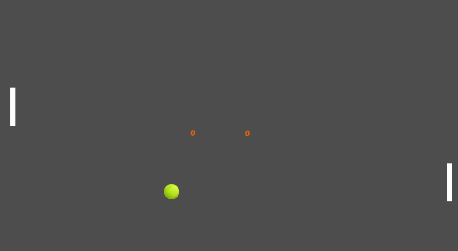

BUGS DE SENA PONG
- Las paletas retroceden si la bola toca el bode superior
- la pelota toca una punta de la pelota hace un sentido vertical y se demora
- la pelota esta centrada
- la inteligencia artificial no es intelignete
- El juego no tiene fin
- la paleta se congela al llegar a la parte inferior de la pantalla
- la paleta no es fluida
Recomendaciones para sena pong
- se recomienda que al hacer gol
- se sugiere cambiar el fondo, no tan gris
- agrega efectos cuando se golpea la pelota
- definir el limite de puntos para ganar y de tiempo
- no hay contraste de colores entre las paletas y la pelota
- que se pueda jugar dos personas en el mismo pc o en linea
- aumento de dificultad de una manera gradual y especifica
DESARROLLADO EN GODOT
